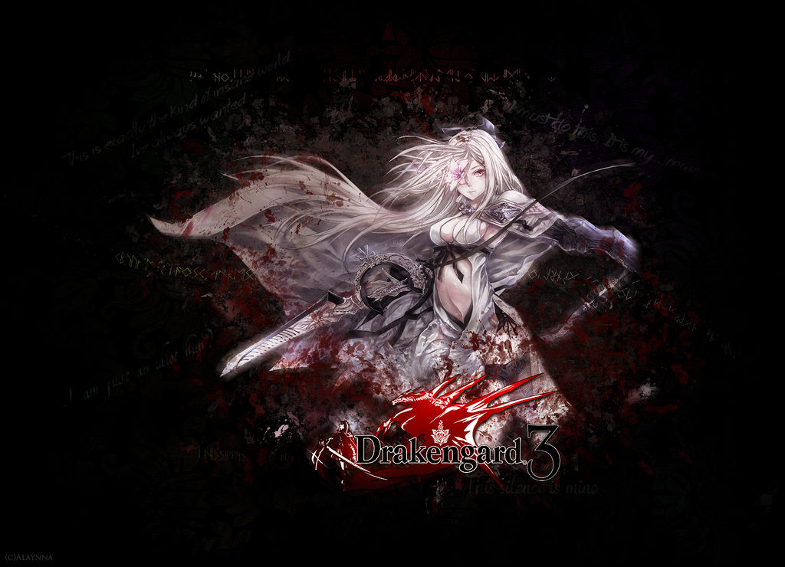

Nier: Automata é um jogo de ação RPG desenvolvido pela PlatinumGames e publicado pela Square Enix, lançado em 2017. Ele faz parte da série Nier, que por sua vez é um spin-off da série Drakengard. Sob a direção criativa de Yoko Taro, o jogo combina um enredo profundo e filosófico com mecânicas de combate fluídas e uma estética única. Inspirado pelo sucesso dos títulos anteriores, Nier: Automata explora temas como a existência, consciência e a essência da humanidade, tudo ambientado em um mundo pós-apocalíptico.
